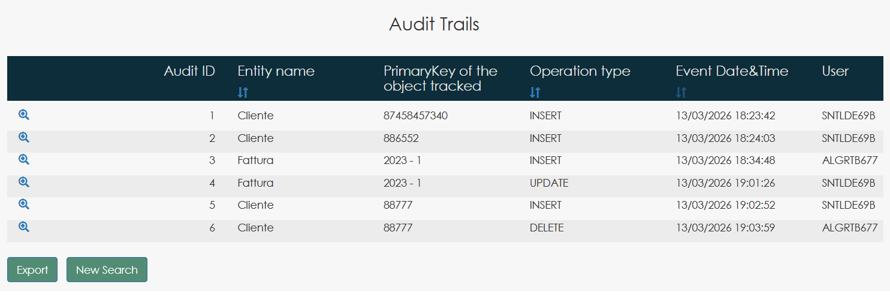
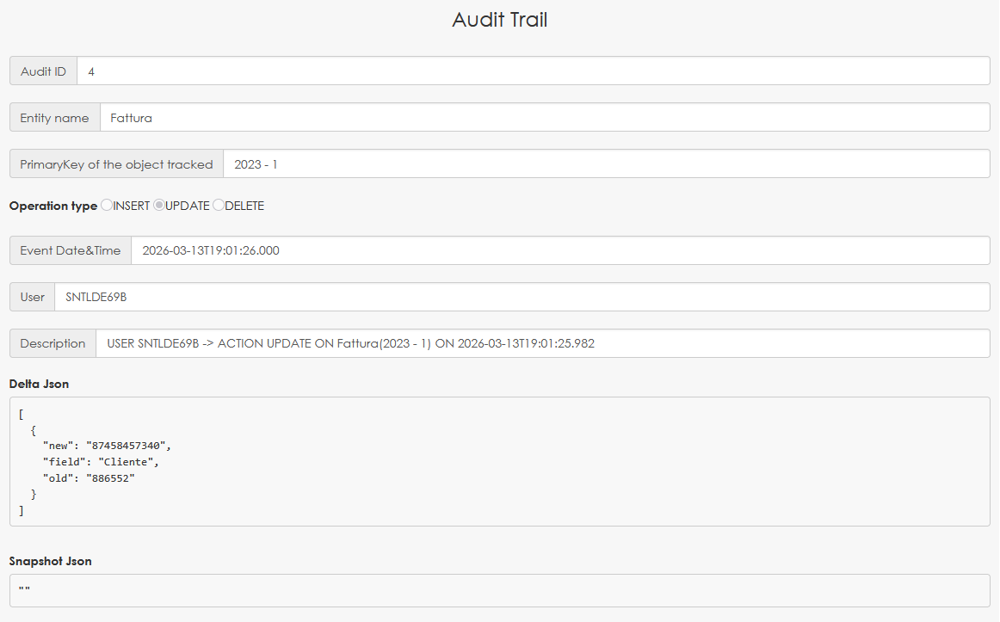
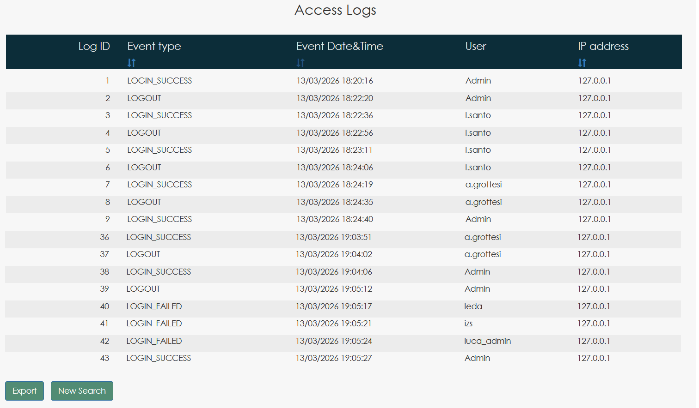

Arquitectura
MySirt es un Execution Engine model-centric basado en un execution meta-model. Los sistemas de información se derivan de definiciones formales y permanecen estructuralmente alineados con dichas definiciones a lo largo del tiempo. La arquitectura está organizada para mantener un comportamiento determinista, inspeccionable y regenerable, evitando la deriva típica de la implementación funcionalidad por funcionalidad.
Estructura arquitectónica
El motor está dividido en capas estables. Cada capa tiene una única responsabilidad y expone un comportamiento determinista: modelos equivalentes producen resultados estructurales equivalentes.
DSL como especificación ejecutable
MySirt utiliza una DSL declarativa, basada en texto, para definir la estructura del sistema, el comportamiento operativo y las reglas organizativas. La DSL no es un artefacto documental: es la especificación autoritativa interpretada por el motor. La validez estructural y las restricciones de comportamiento se evalúan respecto a la definición del modelo, no respecto a funcionalidades implementadas manualmente.
Especificación completa de la DSL MySirt
La DSL completa de MySirt no se divulga públicamente de forma intencionada para proteger la propiedad intelectual.
La documentación pública explica los principios arquitectónicos, el modelo de ejecución y los fundamentos conceptuales del lenguaje sin exponer su sintaxis completa ni fragmentos representativos.
Las especificaciones detalladas del lenguaje están disponibles únicamente durante el proceso de evaluación tecnológica y, cuando corresponda, bajo condiciones de confidencialidad.
Regeneración estructural
Los cambios en el modelo activan una regeneración coherente de las estructuras dependientes. El sistema permanece alineado con la definición por diseño: las modificaciones aplicadas a nivel de modelo se propagan de forma determinista a las estructuras generadas, preservando la coherencia estructural y de comportamiento a lo largo del tiempo.
El proceso de regeneración es estructural y no cosmético: preserva la integridad del contrato del modelo y evita desviaciones accidentales entre componentes no relacionados.
Puntos de extensión (integración de código personalizado)
El comportamiento personalizado puede integrarse en puntos de extensión definidos sin comprometer la regeneración. Los componentes generados y manuales pueden coexistir dentro de límites explícitos: el modelo sigue siendo la fuente autoritativa de la estructura, mientras que el código externo queda restringido a puntos de integración definidos.
Esta separación permite la mantenibilidad a largo plazo: las estructuras regeneradas permanecen coherentes y las integraciones externas siguen siendo trazables y reemplazables.
Traceability Layer
MySirt proporciona trazabilidad integrada a nivel de Execution Engine. Los sistemas generados pueden incluir mecanismos integrados para monitorizar cambios en los datos y eventos de acceso al sistema, según la configuración del modelo. La trazabilidad no se implementa a nivel de aplicación, sino que se deriva automáticamente del Execution Engine.
Dos componentes complementarios proporcionan esta capacidad:
- Audit Trail — registra los cambios en los datos de las entidades (INSERT, UPDATE, DELETE) junto con el usuario responsable y el timestamp exacto del evento, preservando tanto el delta de la modificación como el snapshot completo del registro.
- Access Log — registra eventos de autenticación como LOGIN_SUCCESS, LOGIN_FAILED y LOGOUT junto con la dirección IP de origen.
El audit engine almacena tanto el delta de la modificación como el snapshot completo del registro afectado, permitiendo reconstruir completamente el estado del sistema en cualquier momento.
El comportamiento de auditoría es configurable a nivel de modelo. La definición del sistema puede habilitar la auditoría globalmente, mientras que las entidades individuales pueden adoptar distintas estrategias según las necesidades operativas.
- Basic auditing — registra que una modificación ha ocurrido sin almacenar detalles de los campos.
- Delta auditing — registra los campos específicos modificados junto con sus valores anteriores y nuevos.
- No auditing — las entidades que no requieren trazabilidad pueden excluirse del mecanismo de auditoría.
Esta configuración a nivel de modelo permite equilibrar trazabilidad, coste de almacenamiento y rendimiento, aplicando auditoría detallada solo donde es necesario.

Audit Trail – Lista de eventos: los sistemas generados proporcionan una vista consultable de los eventos registrados.

Audit Trail – Detalle del evento: cada evento muestra tanto los metadatos operativos como el snapshot estructural de la entidad afectada.

Access Log – Eventos de autenticación: la actividad de acceso se registra de forma independiente de los cambios en los datos.
Límites actuales de ingeniería
- Capa frontend basada en un framework web anterior, sustituible sin afectar al core Execution Engine.
- Librería propietaria de acceso a base de datos (documentada), sustituible en el nivel de integración.
- Mejoras en curso centradas en la formalización y coherencia del contrato del modelo.
Estas limitaciones no alteran el modelo de ejecución: la arquitectura central sigue basada en el execution meta-model y es determinista.